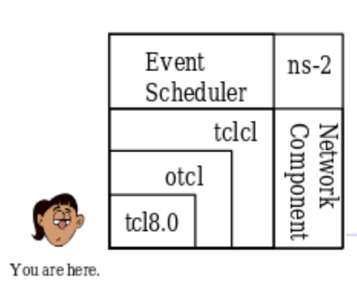
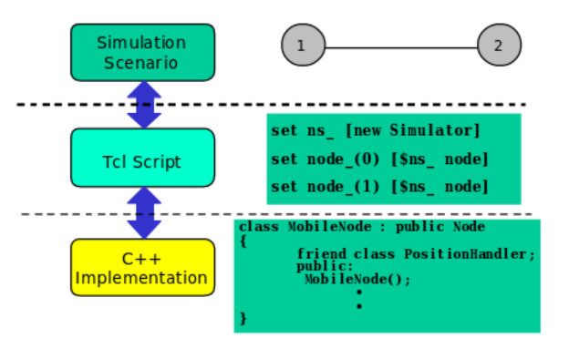

$ sudo apt-get install ns2
$ sudo apt-get purge nam
$ wget --user-agent="Mozilla/5.0 (Windows NT 5.2; rv:2.0.1) Gecko/20100101 Firefox/4.0.1" "http://technobytz.com/wpcontent/uploads/2015/11/nam_1.14_amd64.zip"
$ unzip nam_1.14_amd64.zip
$ sudo dpkg -i nam_1.14_amd64.deb
$ sudo apt-mark hold nam
$ sudo apt-get install openjdk-8-jre
$ java -jar NSG.jar
Tcl is a general purpose multi-paradigm system programming language. It is a scripting language that aims at providing the ability for applications to communicate with each other.
#Create a simulator object
set ns [new Simulator]
#Define different colors for data flows (for NAM)
$ns color 1 Blue
$ns color 2 Red
#Open the NAM trace file
set nf [open out.nam w]
$ns namtrace-all $nf
#Define a 'finish' procedure
proc finish {} {
global ns nf
$ns flush-trace
#Close the NAM trace file
close $nf
#Execute NAM on the trace file
exec nam out.nam &
exit 0
}
#Create four nodes
set n0 [$ns node]
set n1 [$ns node]
set n2 [$ns node]
set n3 [$ns node]
#Create links between the nodes
$ns duplex-link $n0 $n2 2Mb 10ms DropTail
$ns duplex-link $n1 $n2 2Mb 10ms DropTail
$ns duplex-link $n2 $n3 1.7Mb 20ms DropTail
#Set Queue Size of link (n2-n3) to 10
$ns queue-limit $n2 $n3 10
#Give node position (for NAM)
$ns duplex-link-op $n0 $n2 orient right-down
$ns duplex-link-op $n1 $n2 orient right-up
$ns duplex-link-op $n2 $n3 orient right
#Monitor the queue for link (n2-n3). (for NAM)
$ns duplex-link-op $n2 $n3 queuePos 0.5
#Setup a TCP connection
set tcp [new Agent/TCP]
$tcp set class_ 2
$ns attach-agent $n0 $tcp
set sink [new Agent/TCPSink]
$ns attach-agent $n3 $sink
$ns connect $tcp $sink
$tcp set fid_ 1
#Setup a FTP over TCP connection
set ftp [new Application/FTP]
$ftp attach-agent $tcp
$ftp set type_ FTP
#Setup a UDP connection
set udp [new Agent/UDP]
$ns attach-agent $n1 $udp
set null [new Agent/Null]
$ns attach-agent $n3 $null
$ns connect $udp $null
$udp set fid_ 2
#Setup a CBR over UDP connection
set cbr [new Application/Traffic/CBR]
$cbr attach-agent $udp
$cbr set type_ CBR
$cbr set packet_size_ 1000
$cbr set rate_ 1mb
$cbr set random_ false
#Schedule events for the CBR and FTP agents
$ns at 0.1 "$cbr start"
$ns at 1.0 "$ftp start"
$ns at 4.0 "$ftp stop"
$ns at 4.5 "$cbr stop"
#Detach tcp and sink agents (not really necessary)
$ns at 4.5 "$ns detach-agent $n0 $tcp ; $ns detach-agent $n3 $sink"
#Call the finish procedure after 5 seconds of simulation time
$ns at 5.0 "finish"
#Print CBR packet size and interval
puts "CBR packet size = [$cbr set packet_size_]"
puts "CBR interval = [$cbr set interval_]"
#Run the simulation
$ns run
set ns [new Simulator]
$ns use-scheduler Heap
$ns at 300.5 "complete_sim"
. . .
proc complete_sim {} {
. . .
}
Presentation by Sundar Raman G
Under CSI -BMSIT&M Student Chapter